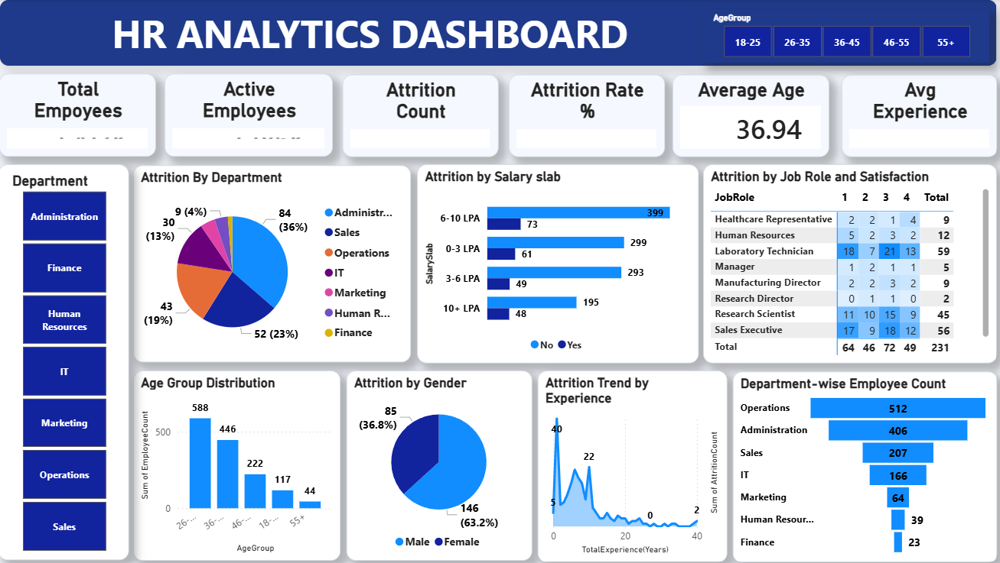

Most HR attrition dashboards are organized around department and salary, since that's what the source data emphasizes. I cut the same dataset by overtime status as well, since workload is usually a stronger predictor of burnout-driven attrition than either of those.
Power BI · DAX · Power Query
HR attrition analytics
A workforce analytics dashboard covering 1,480 employees, built to find which factor actually drives attrition rather than just reporting the department breakdown.

Power BI dashboard: attrition by department, salary slab, age group, and experience.
Overview
Key finding
Employees who work overtime leave at 31.2%, against 10.4% for everyone else — a bigger gap than any single department or salary band shows on its own.
Recommendation
An overtime audit inside the highest-attrition departments is likely to find more than another engagement survey would. Overtime load looks like the actual mechanism behind several of the department-level differences, not a separate factor.